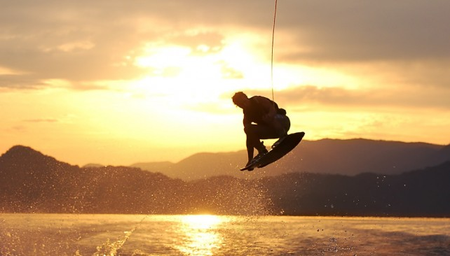
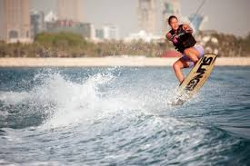

Wakeboarding
Wakeboarding was developed from a combination of water skiing, snowboarding and surfing techniques.
Wake boarders are towed behind motorboats at top speeds of about 17-24 miles per hour. You can use an boat to pull a wakeboarder but to do tricks a ski boat with a tower is lot better when manuvering the tricks.
Wakeboarding uses a long rope which is about 65 feet. It takes a lot of balance and strength to be good at it.
Although wakeboarding can be a very fun sport it involves a lot of physical activity.
Wakeboarding professionals

